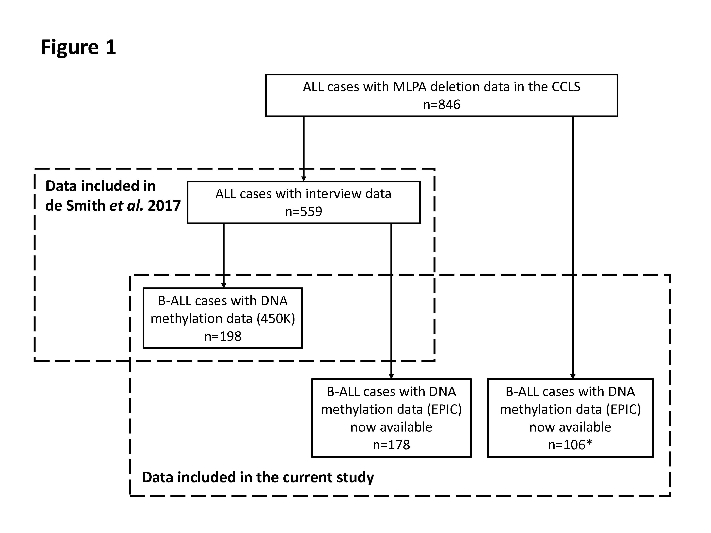

Sample flow chart¶
Sample flowchart. Left box: ALL cases included in the previous analysis for the association between early-life tobacco smoke and gene deletion frequencies (n = 559), in which 361 cases were analyzed only with interview data and 198 B-ALL cases had Illumina 450K genome-wide DNA methylation array data available and were thus included in the analyses of DNA methylation at the AHRR CpG cg05575921. Right box: samples included in this study, including 198 B-ALL cases that were analyzed previously and 284 B-ALL cases now with available EPIC array DNA methylation data and MLPA gene deletion requency data, of which 178 overlapped with the 361 cases that were analyzed previously only with interview data. In total, 482 B-ALL cases are included in our case-only analysis of prenatal tobacco smoke exposure and gene deletion frequency. *, Eleven of 106 B-ALL cases have interview data now available.
Study publication: link
Output:
